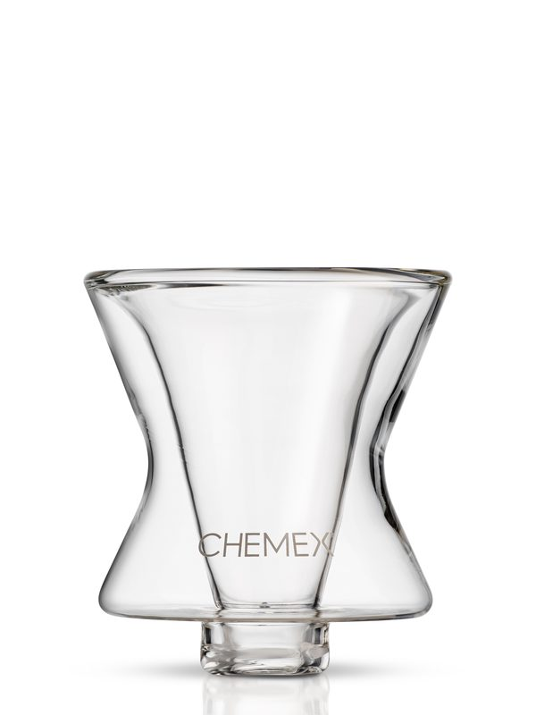

Travel Gifts for People Going Home for the Holidays
Specs and details come from the manufacturer and official pages listed under Sources. We have not hands-on tested these products or tours; nothing here is a personal review.
Holiday travel means checked bags, long layovers and somebody else's coffee maker. These picks target those three problems. They were chosen from specs and the makers' own pages, not from personal trips.
For the bag
Apple AirTag (2nd generation)
Best for: iPhone users who check a bag
- Works with the Find My app; needs a compatible iPhone or iPad
- User-replaceable CR2032 battery; Apple says more than a year of battery life
- Item location can be shared temporarily, including with participating airlines
- Apple says Precision Finding reaches up to 50% farther than the first AirTag
Specs per: Apple tech specs; Apple Newsroom announcement; Amazon listing (retailer) (accessed 2026-10-27).
Peak Design Packing Cube, Medium (Eclipse)
Best for: carry-on packers
- Medium: compresses to about 32 x 32 x 8 cm (8 L) and expands to 32 x 32 x 17 cm (18 L), per Peak Design
- Two compartments with a movable divider for clean and worn clothes
- Weatherproof recycled ripstop shell
Specs per: Peak Design product page (accessed 2026-10-27).
For the airport
Anker Nano Power Bank (10,000mAh, 30W, built-in USB-C cable)
Best for: phone-heavy travelers who forget cables
- 10,000mAh
- Built-in USB-C cable plus a USB-C port: 30W in/out; USB-A port up to 22.5W
- About 104 x 52 x 26 mm, 215 g (Anker A1259 page)
Specs per: Anker product page (A1259) (accessed 2026-10-27).
Zojirushi Stainless Mug SM-KHE48 (16 oz, Black)
Best for: road-trippers and airport coffee people
- 16 oz (0.48 L), vacuum insulated, 18/8 stainless interior
- Flip-open lid with a lock
- Zojirushi heat-retention rating: 187°F after 1 hr, 154°F after 6 hr (from 203°F water at 68°F room temperature)
- Hand wash
Specs per: Zojirushi online store (accessed 2026-10-27).
For the coffee snob staying with relatives
CHEMEX FUNNEX Personal Coffeemaker

Best for: coffee people who travel by car, or a holiday-at-the-in-laws kit
- Double-walled borosilicate glass cone that brews 5 to 15 oz straight into a cup, mug or thermos
- Silicone gasket to seat it on different cups
- Uses FP-2/FP-2N half-moon filters
- CHEMEX pitches it for the office, dorm or camping
Specs per: CHEMEX product page (accessed 2026-10-27).
Pack a box of FP-2N filters with it.
Packing notes
- AirTag needs an iPhone or iPad; it isn't an Android tracker.
- Power banks generally belong in carry-on, not checked bags. Check the airline's current rules.
FAQ
- Does AirTag work with Android?
- AirTag is designed for Apple's Find My app on iPhone or iPad.
- Can I bring a power bank on a plane?
- Airlines generally require spare lithium batteries in carry-on bags. Check the airline's current rules before you fly.
Sources
- Apple AirTag (2nd generation): Apple tech specs (accessed 2026-10-27)
- Apple AirTag (2nd generation): Apple Newsroom announcement (accessed 2026-10-27)
- Apple AirTag (2nd generation): Amazon listing (retailer) (accessed 2026-10-27)
- Peak Design Packing Cube, Medium (Eclipse): Peak Design product page (accessed 2026-10-27)
- Anker Nano Power Bank (10,000mAh, 30W, built-in USB-C cable): Anker product page (A1259) (accessed 2026-10-27)
- Zojirushi Stainless Mug SM-KHE48 (16 oz, Black): Zojirushi online store (accessed 2026-10-27)
- CHEMEX FUNNEX Personal Coffeemaker: CHEMEX product page (accessed 2026-10-27)
Prices aren't listed because they change often; check the current price with the retailer before buying. Spotted an error? See the contact details on our About page.